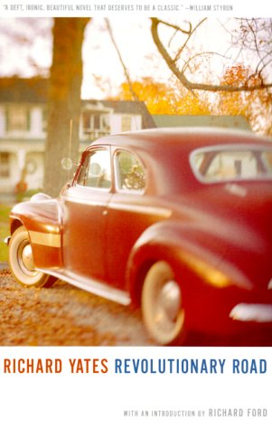
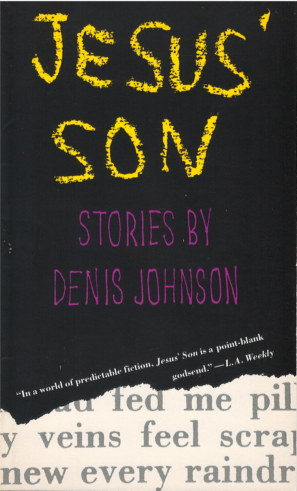
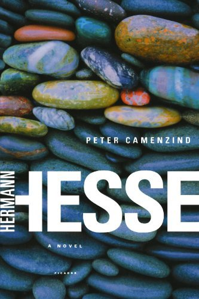

I haven't taken very many fun trips recently, however I do have one coming up that I'm looking forward to quite a bit.
After the spring semester ends I'm going to Europe for two weeks.
I'm flying into Amsterdam, where I've been before, but from there I'm headed to Copenhagen and Berlin which will both be new experiences!
My Three Favorite Pet Names
- Coco - a black miniature poodle
- Harley - a brown miniature poodle
- Garfield - an overweight orange tabbycat
Honey in Doylestown, PA
Honey is a tapas style restaurant that re-invents and elevates classic American fare like crab cakes or corn on the cob.
It's small and family owned, which makes me even happier to support it.
 I love fried chicken! It's a delicious, flavorful dish that's perfect for a warm summer evening.
I love fried chicken! It's a delicious, flavorful dish that's perfect for a warm summer evening.
You can make it in a variety of ways, including a bit healthier (by air frying) or more indulgent (by deep frying and serving with waffles and maple syrup)!
| Name of the Book |
Cover |
Author |
Summary |
| Revolutonary Road |
 |
Richard Yates |
Frank and April Wheeler, a seemingly perfect suburban couple in the 1950s, struggle with feelings of dissatisfaction and unfulfilled dreams. As their illusions of happiness unravel, their attempts to break free from conformity lead to tragic consequences, exposing the emptiness beneath the American Dream. |
| Jesus' Son |
 |
Denis Johnson |
A collection of interconnected short stories follows a drifting, drug-addicted narrator as he navigates a world of violence, loss, and fleeting moments of grace. Despite the darkness of his experiences, his journey is infused with raw beauty, humor, and a fragile sense of redemption. |
| Peter Camenzind |
 |
Herman Hesse |
A young man from a small Swiss village leaves home in search of artistic fulfillment and personal enlightenment, only to find himself disillusioned by modern society. Through his travels and experiences, he ultimately discovers that true beauty and meaning lie in simplicity, nature, and human compassion. |
| The Razor's Edge |
 |
W. Somerset Maugham |
After witnessing the horrors of World War I, Larry Darrell rejects conventional success and embarks on a spiritual quest for meaning, while those around him pursue wealth and social status. His journey leads him from Paris to India, challenging the materialism of his peers and redefining what it means to live a fulfilled life. |